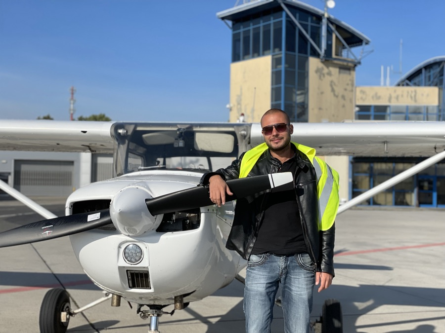

Even for native speakers understanding and comunicating with ATC is a challenge. Captain Speaking enters the game.
Each exercise is a small chunk of ATC communication, taken from a random station with live subtitles, that improves comprehension and vocabulary building. Your ear will swiftly be trained to recognize communication patterns.
Another important skill for pilots is the ability to comprehend and memorize important information, such as radio frequencies, altitudes, QNH settings, weather information, vector instructions, and more. Subtitles typically do not contain this type of information, so your goal is to retrieve it and answer the questions provided by the app. While this can be challenging, it is also a very effective way to learn and develop these crucial skills.
Aviation is an international collaboration area where you will encounter dozens of nations and their accents. As a part of professionalism and confidence, it is important to be able to understand all of them for safe flight. Moreover, the quality of radio communication can vary depending on the territory, weather, and technical issues. Our app provides exercises with many possible combinations and options to prepare you for real-life challenges.
Besides structured exercises, the app includes a live-style ATC radio. Pick a station from a list of airports and countries and listen to real Air Traffic Controllers. The recordings are prepared for efficient listening: silence is removed, so every minute you spend is full of phraseology. Use it as background training while you commute or relax, tune in to different regions, and get used to a wide range of accents and radio quality. Subtitles are available for the radio too, so you can switch them on when you need help and off when you are ready to test your ear.
Play a short ATC clip with subtitles and annotations that highlight the key parts.
Reply to quiz questions: choose the correct option or type the value you heard, like a frequency, altitude or QNH.
Check your result, see what you missed and follow your progress as you complete more quizzes.
Exercises have different complexity levels and topics, so you can start easy and build up to real-life traffic.

Hi, I'm Mykyta Karpyshyn, a software engineer who looks up every time an aircraft flies over. Aviation started as a hobby and, like any good hobby, it got out of hand: I spent hours listening to ATC radio and realised how hard it is to catch every word, even when you know the phraseology.
So I did what engineers do and built a tool for it. Captain Speaking is the app I wished existed: short real-life clips, subtitles when you need them, and quizzes that train your ear. I hope it helps you sound confident on the radio, wherever you fly.